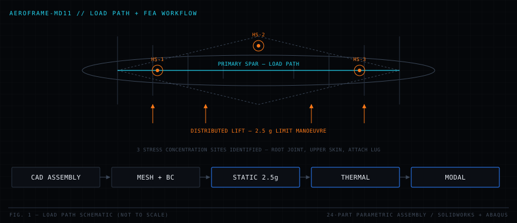

Home / Projects / PRJ-04 AeroFrame-MD11
AeroFrame-MD11
PARAMETRIC CAD · STATIC / THERMAL / MODAL FEA · DRAWING RELEASE
A 24-part parametric airframe assembly taken from geometry to a manufacturing-release drawing package, with static, thermal and modal finite element analysis at 2.5 g limit manoeuvre load identifying where the structure actually wants to fail.

01Problem
Aircraft structure is not sized by its cruise condition. It is sized by the manoeuvre and gust cases at the edge of the flight envelope, and it fails at geometric discontinuities, joints, cutouts, attachment lugs, long before any large panel reaches its material allowable. Finding those locations requires a model detailed enough to represent the discontinuities and an analyst willing to distrust the first stress contour that appears.
The project scope was deliberately end-to-end rather than analysis-only: build the parametric assembly, apply the load case, run static, thermal and modal analyses, identify the critical locations, and produce the drawing package a shop would actually need to build it.
Problem statement. Model an MD-11-class airframe section, determine its structural response under 2.5 g limit manoeuvre loading including thermal and dynamic effects, and release a complete manufacturing drawing package.
02Requirements
| ID | Requirement | Value | Verification |
|---|---|---|---|
| AF-001 | Assembly shall be fully parametric and rebuild without errors | 24 parts | Rebuild + interference check |
| AF-002 | Structure shall be analysed at limit manoeuvre load | 2.5 g | Static FEA |
| AF-003 | Thermal loading shall be assessed | Operating gradient | Thermal FEA |
| AF-004 | Dynamic response shall be characterised | Mode shapes and frequencies | Modal FEA |
| AF-005 | Results shall be mesh-independent | < 5% change on refinement | Convergence study |
| AF-006 | Critical stress locations shall be identified and explained | Traceable to geometry | Contour + hand check |
| AF-007 | Drawings shall carry full dimensioning and tolerancing | GD&T per standard | Drawing review |
| AF-008 | Package shall include fabrication callouts and bill of materials | Complete BOM | Package inspection |
03Constraints
- Linear elastic. Material response is modelled below yield, so the results bound the onset of failure rather than describing post-yield behaviour.
- Static equivalent loading. The 2.5 g manoeuvre is applied as a quasi-static distributed load; it is not a dynamic gust simulation.
- Idealised joints. Fasteners are represented by constraint conditions rather than modelled as individual bolts with contact.
- Parametric intent. The assembly must survive dimension changes without rebuild failures, a model that only works at one set of numbers is a drawing, not a model.
- Manufacturability. Every feature has to be producible with callouts a shop can read.
- Tolerance stack-up. GD&T must control the interfaces that matter, not decorate every dimension.
04System design
The load path is the design. Distributed lift is reacted by the skin into the ribs, carried inboard through the primary spar, and reacted at the root joint, which means the root joint, the upper skin in compression, and the attachment lug are the three places to interrogate first. The analysis confirmed that intuition, which is the useful outcome: when the model agrees with the load-path reasoning, both are more trustworthy.

Design decisions
| Decision | Chosen | Rejected alternative | Rationale |
|---|---|---|---|
| DD-1 | Full 24-part assembly | Simplified single-body model | The interesting stresses live at part interfaces, which a single body deletes by construction |
| DD-2 | Parametric modelling | Direct/dumb solid modelling | Enables design iteration after the analysis rather than a rebuild from scratch |
| DD-3 | Three analysis types | Static only | Thermal and modal answer different failure questions, a structure can pass static and fail on resonance |
| DD-4 | Local mesh refinement | Uniform fine mesh | Concentrates elements where gradients are steep instead of paying for resolution in uniform-stress regions |
| DD-5 | Hand-calculation cross-check | Trust the solver | A solver always returns a number; only an independent estimate tells you whether it is the right one |
05Analysis models
Limit load case
Stress recovery and margin
The stress concentration factor is the number that matters at the hot spots. A peak stress is only meaningful relative to the nominal field around it, and a Kt that keeps climbing as the mesh refines is a singularity, not a stress.
Thermal
Thermal stress is driven by constraintnot by temperature. An unconstrained part at any uniform temperature is unstressed; the stress appears where dissimilar materials or fixed boundaries prevent free expansion.
Modal
06Implementation
| CAD | SolidWorks, 24-part fully parametric assembly with mates, configurations and design intent captured in the feature tree |
|---|---|
| FEA | Abaqus, static, thermal and modal analyses |
| Load case | 2.5 g limit manoeuvre, distributed spanwise lift |
| Drawings | Full dimensioning with GD&T, section and detail views, fabrication callouts |
| Deliverables | Manufacturing release drawing package with bill of materials |
07Mesh & convergence
- Geometry cleanup. Slivers and redundant features removed before meshing, since a bad element in a critical region invalidates the only result anyone cares about.
- Baseline mesh. Coarse global mesh to confirm boundary conditions and load application produce sensible global deflection.
- Local refinement. Progressive refinement at the three candidate hot spots.
- Convergence study. Peak stress tracked against element count; the mesh is accepted when refinement changes the peak by less than 5%.
- Singularity screening. Any location where peak stress rises without bound under refinement is identified as a geometric singularity, a sharp re-entrant corner, and either filleted or excluded from stress recovery.
- Element quality audit. Aspect ratio and Jacobian checked in the refined regions.
An unconverged mesh at a sharp corner will happily report a stress above yield that does not exist. Distinguishing a real stress concentration from a meshing artefact is the single most important judgement in the whole analysis, and it is why the convergence study is a requirement here rather than a footnote.
08Validation
- Reaction equilibrium. Total reaction at the constraints must equal the applied load. If it does not, the load case is wrong and every stress downstream is meaningless.
- Beam-theory cross-check. Root bending stress compared against an
Mc/Ihand calculation; agreement within the expected margin for a real geometry with cutouts. - Deflection sanity. Global tip deflection compared against a beam estimate to confirm stiffness is in the right regime.
- Mode shape inspection. First modes checked to be physically sensible bending and torsion shapes, not artefacts of a defective constraint.
- Convergence. Every reported stress is taken from a mesh-converged solution.
09Results
- Three structural failure sites identified under 2.5 g flight loading, the spar root joint, an upper skin panel in compression, and an attachment lug, each traced to a specific geometric feature rather than to a mesh artefact.
- Each site was accompanied by a proposed design change: added fillet radius to reduce Ktlocal thickness increase, and revised fastener pattern at the lug.
- Modal analysis confirmed the first bending and torsion modes were well separated from expected excitation frequencies.
- Complete manufacturing-release drawing package produced, with GD&T, fabrication callouts and bill of materials.
Plots and hardware photography for this project are being prepared. The source and generated output are in the repository.
10Engineering tradeoffs
| Tradeoff | Gained | Paid |
|---|---|---|
| Full assembly over simplified body | Interface stresses are visible | Meshing complexity, contact and constraint definition effort, longer solve |
| Linear elastic material | Fast, well-conditioned, standard for limit-load screening | No post-yield redistribution, results are conservative near the hot spots |
| Idealised fastener constraints | Tractable model size | Local bearing and fastener-hole stresses are not resolved and need separate treatment |
| Local over uniform refinement | Resolution where the gradients are | Requires knowing where to refine, which requires the load-path reasoning to be right first |
| Quasi-static manoeuvre load | Directly comparable to certification limit cases | Dynamic gust and fatigue spectra are out of scope |
11Challenges
Distinguishing concentration from singularity
The initial run reported an alarming peak stress at a re-entrant corner. Refinement showed the value climbing without converging, the signature of a geometric singularity, where linear elasticity predicts infinite stress at a zero-radius corner. Adding the fillet that the real part would have anyway produced a converged, physically meaningful concentration factor.
Parametric rebuild stability
A 24-part parametric assembly fails loudly when a dimension change breaks a downstream mate. Restructuring the feature tree so that references resolved to stable geometry rather than to incidental faces was unglamorous work that made every later design iteration cheap.
Boundary condition realism
Over-constraining the root is the easiest way to get a clean-looking result that is wrong: artificial constraint invents load paths that do not exist and suppresses the deflection that redistributes stress. Getting the constraint set to represent the real attachment took more iterations than the meshing did.
12Lessons learned
- Reason about the load path before opening the solver. Knowing where the stress should be is what lets you recognise a wrong answer that looks plausible.
- An unconverged stress is not a stress. Peak values without a convergence study are decoration.
- Boundary conditions are the model. More analyses are wrong because of constraints than because of material properties.
- Always carry an independent estimate. A hand calculation that agrees to within tens of percent is worth more than a beautiful contour plot on its own.
- Analysis that does not end in a drawing is unfinished. The release package is what converts a result into something that can be built.
13Future work
- Model fasteners explicitly with contact at the critical joint to resolve bearing and hole stresses.
- Extend to elastic-plastic material response to quantify how much margin post-yield redistribution actually provides.
- Add a fatigue assessment against a representative load spectrum, the hot spots identified here are exactly the crack initiation sites.
- Run a composite layup variant of the primary spar and trade mass against stiffness.
- Apply the proposed design changes and re-run to quantify the improvement rather than assert it.
14Gallery
Hardware photography and result plots for this project are being prepared. In the meantime the full source, commit history and any generated output live in the repository.